Optional: Build the Cohort in the Data Explorer
Core series, optional demonstration · no code to build; R to use it · about 30 minutes
Core series overview 1.1 Build the cohort (with SQL)
Overview
In 1.1 we build the cohort with SQL. Workbench 2.0 also has a point-and-click tool, the Data Explorer, that builds a cohort from a menu of criteria: no code needed. This page shows how to build our type 2 diabetes cases with it, how to save a data snapshot, and how to read a Data Explorer cohort into a notebook.
As of October 2026, the Data Explorer offers only version v8r9, the All of Us Controlled Tier CDR v8 (BigQuery dataset C2024Q3R9). The course notebooks use CDR v9 (C2025Q4R6). Participant IDs changed between v8 and v9, so:
- Use the Data Explorer to learn the tool, and to explore quickly.
- Don’t combine a Data Explorer cohort with the course notebooks’ files: the IDs won’t match.
- Don’t copy the dataset name from a Data Explorer query into
aou_setup.R.
Why it’s worth knowing
- It’s the fastest way to see how many people meet a set of rules, and to try changes, without writing a query.
- Its Summary and Queries tabs show the SQL it writes: a good way to learn how a cohort turns into a query.
- Collaborators who don’t code can build and share cohorts in the same workspace.
Same rules, different numbers
Built in the Data Explorer, our cases came to 65,710 people and our controls to 311,871. The SQL in 1.1 found 80,919 and 331,912. Same rules, different counts:
| Data Explorer | 1.1 (SQL) | |
|---|---|---|
| Data | CDR v8 (2024 data cutoff) | CDR v9 (2025 cutoff): more participants, more years of records |
| Age | 18+ today | 18+ on 2025-01-01 |
| “Has EHR data” | All of Us’s ready-made flag | at least one EHR visit, including records participants share themselves |
| Cases | 65,710 | 80,919 |
| Controls | 311,871 | 331,912 |
💬 Discuss: the same rules on different data, or with slightly different definitions, give different counts. What should you always report with a count? (The data version, and the exact definitions.)
Build the cases
1. Create the cohort
On the Resources tab: + New resource → New Cohort.
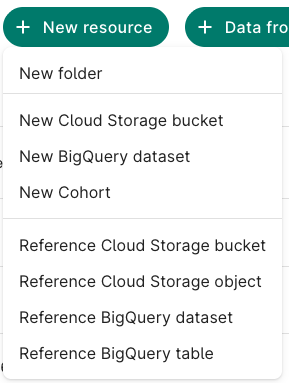
Select collection: All of Us Controlled Tier. Its version shows as v8r9, the only one offered. Next, then Next again (no new policies are needed: the workspace already has this data collection).
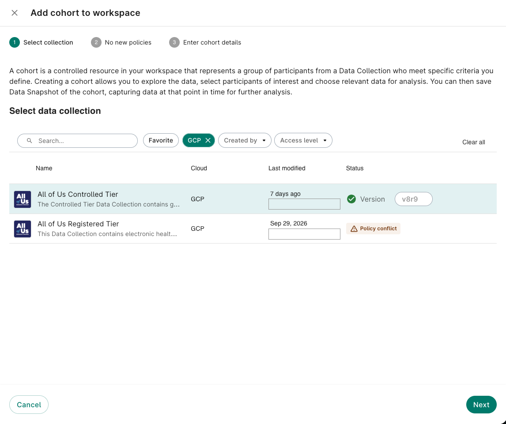
Enter cohort details:
| Field | Enter |
|---|---|
| Cohort name | t2d_cases |
| Description | Type 2 diabetes cases for the CWML training series (Data Explorer demonstration, CDR v8): adults (18+) with EHR data and a type 2 diabetes diagnosis, and no type 1 diabetes diagnosis. Same rules as notebooks/sql/t2d_cohort.sql. |
| Folder | Create a new folder called cohorts, so your cohorts stay together |
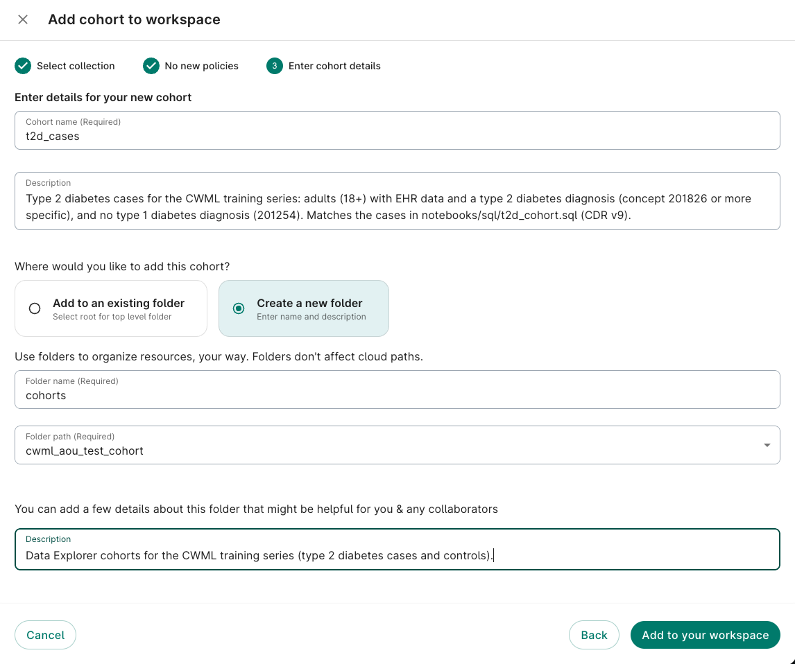
Click Add to your workspace. The cohort opens with an empty Cohort filter: everyone in the data collection.
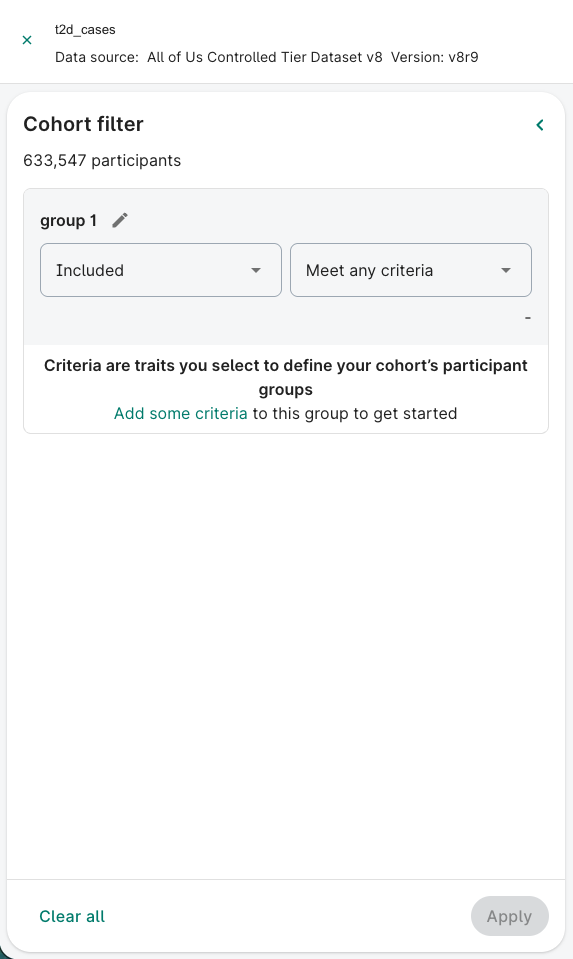
2. Add the criteria
Each group is a set of criteria; groups combine with AND. Within a group, choose Meet any criteria. Click Add some criteria to open the list:
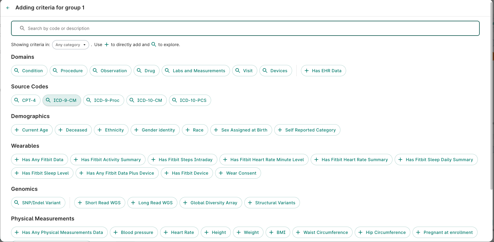
| Group | Included or Excluded | Criteria |
|---|---|---|
| 1 | Included | Demographics → Current Age: 18 to 125 |
| 2 | Included | Domains → Condition → search type 2 diabetes → tick Type 2 diabetes mellitus (concept 201826) |
| 3 | Excluded | Domains → Condition → Type 1 diabetes mellitus (concept 201254) |
| 4 | Included | Domains → Has EHR Data |
Three ways to search. The search box finds a criterion by its name (e.g. type 2 diabetes), by its vocabulary code (e.g. the SNOMED code 73211009 for Diabetes mellitus), or by its OMOP concept ID (e.g. 201820). Searching by code or ID finds exactly the concept you mean, which helps when several names look alike.
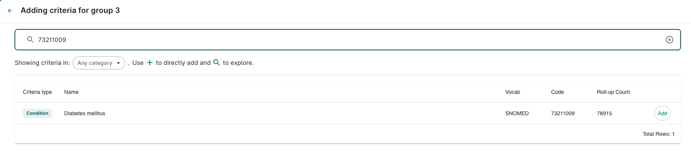
For group 2, ticking Type 2 diabetes mellitus also includes every more specific concept under it: the rows below it in the list are ticked automatically (the same idea as concept_ancestor in 1.1). View in hierarchy shows the tree.
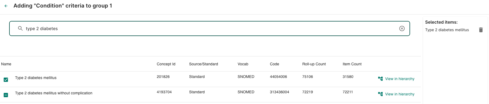
For group 3, change Included to Excluded, then add Type 1 diabetes mellitus:
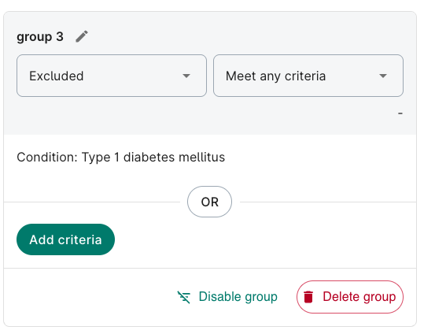
The top of the finished filter, with the groups joined by AND (scroll down for groups 3 and 4):
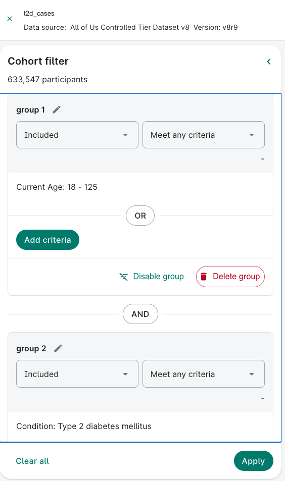
Click Apply. The participant count at the top updates: 65,710 in our test.
3. The controls (optional)
The same steps, with a cohort called t2d_controls and these groups:
| Group | Included or Excluded | Criteria |
|---|---|---|
| 1 | Included | Current Age: 18 to 125 |
| 2 | Included | Has EHR Data |
| 3 | Excluded | Condition → Diabetes mellitus (concept 201820, SNOMED code 73211009): every type of diabetes |
The order of the groups doesn’t matter: they’re all joined by AND.
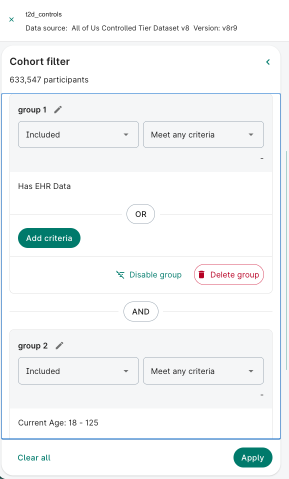
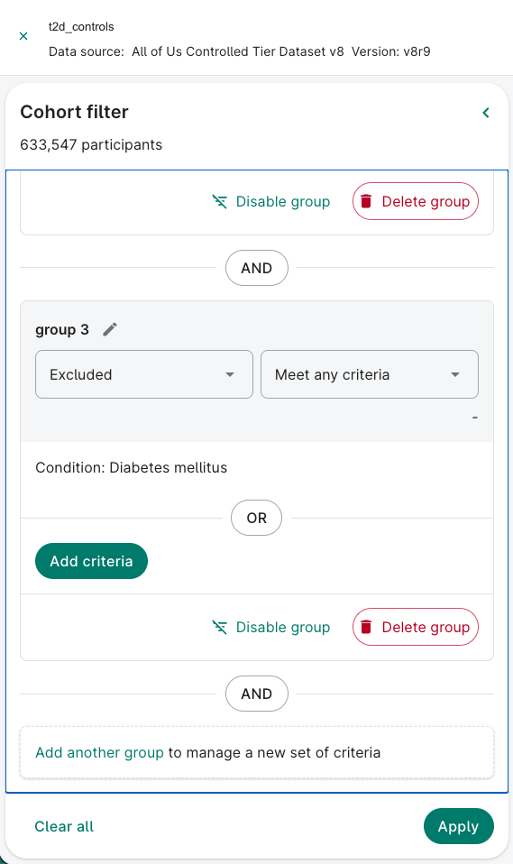
Click Apply: 311,871 in our test.
Save a data snapshot
A data snapshot saves the cohort’s data (as CSV files) and/or the queries that produce it (as a notebook) to a bucket. Click Save data snapshot at the top right of the cohort.
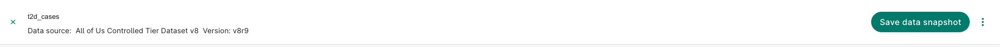
Select data: choose the tables, then the columns.
- On the left, Demographics and Tables that contain cohort-defining criteria are ticked by default; + Browse more data adds other tables (e.g. measurements).
- The Tables tab is where you choose which columns to include: every column has a checkbox. Untick the ones you don’t need. Fewer columns means smaller files and less data to look after.
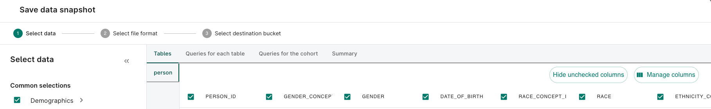
The same table with the concept ID columns unticked, keeping the readable names (GENDER, RACE):
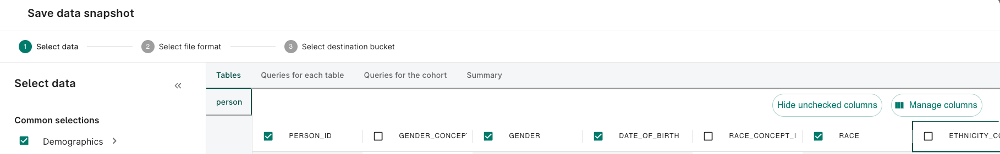
This option adds, for example, the condition_occurrence table, but only the rows for the criteria’s own concepts: for the cases, their diabetes diagnoses, not all their diagnoses. For the controls, whose rule is no diabetes, that table is therefore empty: their query asks for diabetes codes among people with no diabetes. To get other diagnoses, add them with + Browse more data.
The Summary tab lists the criteria and the tables, in plain words: a good check before saving.
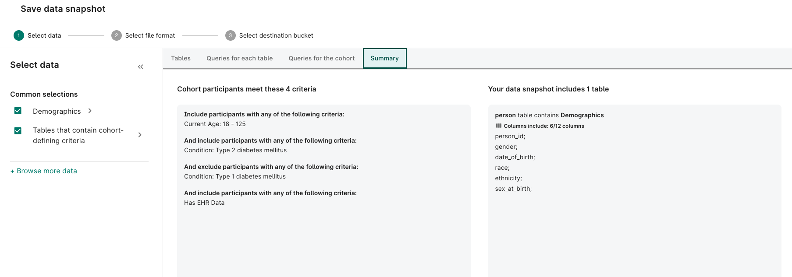
The Queries for each table tab shows the SQL for each table. Queries for the cohort shows the complete code, in Python (Jupyter) or R: choose with the drop-down, then Copy.
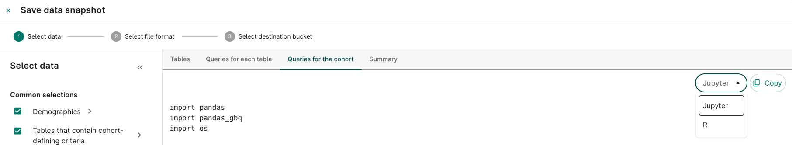
Select file format: CSV tables (zipped), and/or a notebook with the queries, in R or Python.
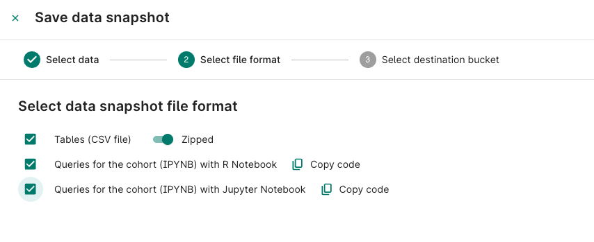
Select destination bucket: pick your workspace bucket, then Save.
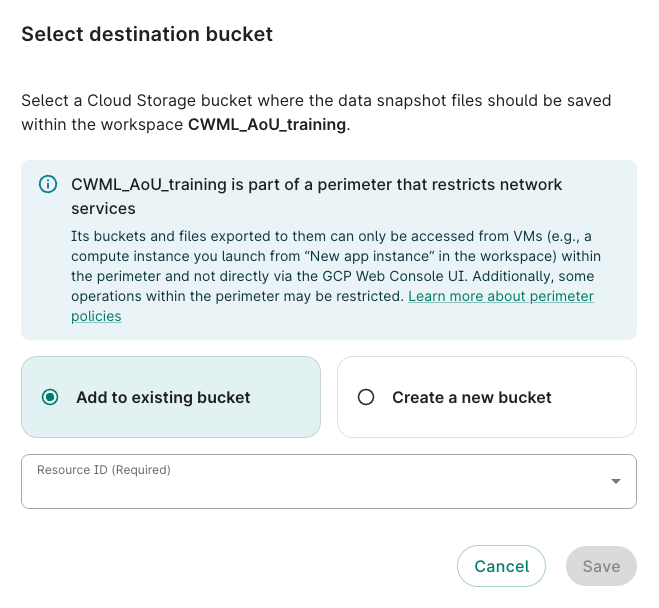
The cohort appears on the Resources tab, in the folder you chose:
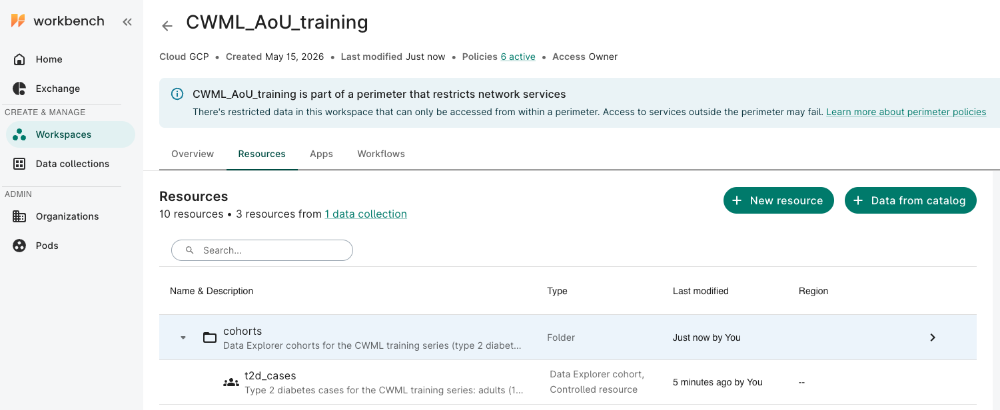
Use a Data Explorer cohort in a notebook
Two ways. The first is simpler, and works with the course’s aou_setup.R.
A. Run its query from R (simplest)
- In Save data snapshot → Queries for each table → person, click Copy.
- In an R notebook in
notebooks/core/, paste it betweenr"---(and)---":
source("../aou_setup.R") # run_query() and BILLING_PROJECT
de_person_sql <- r"---(
-- paste the query here: it starts with SELECT and ends with the WHERE clause
)---"
de_cases <- run_query(de_person_sql) %>%
mutate(person_id = as.character(person_id))
nrow(de_cases) # should match the Data Explorer's count
de_cases %>% count(T_DISP_sex_at_birth)r"---( … )---"is a raw string: R keeps everything inside as it is, quotes and backslashes included, so the SQL needs no editing.- The query reads the Data Explorer’s own tables (
C2024Q3R9andC2024Q3R9_index_…), so the people are CDR v8 participants. - Columns starting
T_DISP_are the display names of concept IDs (e.g.T_DISP_raceforrace_concept_id). - 💰 A few cents: it reads the
persontable and the Data Explorer’s index tables.
B. Use the snapshot’s own notebook
If you chose Queries for the cohort (IPYNB) with R Notebook, the snapshot saves a notebook to your bucket that exports each table to CSV files and reads them back. Two things to know:
- It needs your bucket’s Cloud Storage address in a setting called
EXPORT_BUCKET, which Workbench 2.0 doesn’t set for you. Find the address on the Resources tab (your bucket’s details, startinggs://), then uncomment and edit the line near the top:Sys.setenv(EXPORT_BUCKET = "gs://…"). - The code includes your workspace’s project ID for billing. That’s fine in your workspace, but don’t publish it.
Key takeaways
- The Data Explorer builds a cohort from criteria, with no code: groups combine with AND; a group can be Excluded
- Choosing a condition includes everything under it in the hierarchy
- A data snapshot saves CSV files and/or the queries as a notebook
- The Data Explorer currently uses CDR v8: don’t combine its cohorts with the course’s v9 files
- The same rules on different data give different counts: always report the version and definitions
Next
Back to 1.1 Build the cohort, which builds the same cohort with SQL on CDR v9.